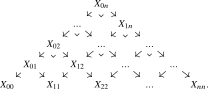
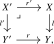
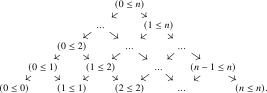
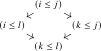
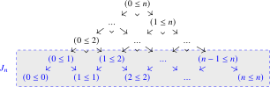
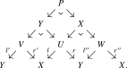
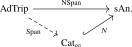
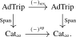
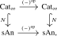
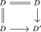

So far, we could reduce all of the constructions of \(\infty \)-categories we encountered to a handful of elementary constructions, like pullbacks, subcategories and functor categories. The situation for span categories is different: while the heuristic description given before tells us what the objects and morphisms should be, it is not immediately clear how to assemble these into an \(\infty \)-category.
The technique we will use is that of complete Segal animae, discussed in detail in Chapter 24. Let us briefly recall the main idea. Given an \(\infty \)-category \(C\), we may consider for every \(n \geq 0\) the anima \(\Map ([n],C)\) of ‘strings of \(n\) composable morphisms in \(C\)’. Sending \([n]\) to \(\Map ([n],C)\) for all \(n\) provides a simplicial anima \(N(C)\colon \simp \catop \to \An \), called the nerve of \(C\). A major insight due to Rezk is that we may use this assignment to identify \(\infty \)-categories with suitable simplicial animae. More precisely, the resulting nerve functor \[ N\colon \Cat _{\infty } \hookrightarrow \sAn \] from \(\infty \)-categories to simplicial animae is fully faithful. The essential image of this inclusion is given by the complete Segal animae, a class of simplicial animae satisfying analogues of the Segal Axiom (Proposition 1.4.5) and the Rezk Axiom (Axiom F).
For the purpose of constructing span categories, we will use this process in reverse: if we manage to write down a simplicial anima \(\NSpan _{L,R}(C)\colon \simp \catop \to \An \) encoding strings of \(n\) composable morphisms in the span category for all \(n\), and if we manage to verify that it is a complete Segal anima, then we have managed to construct our desired \(\infty \)-category \(\Span _{L,R}(C)\). This leads to the next question: what data should be contained in a functor \([n] \to \Span _{L,R}(C)\)? Such a functor should first of all encode \(n\) composable spans. Furthermore, it should provide a compatible family of choices for their compositions. Given that we want composition in the span category to be given by pullback, we conclude that \(\NSpan _{L,R}(C)_n\) should be the anima of diagrams in \(C\) of the following form:

Here all the left-pointing morphisms should be in the given class \(C_L\), all the right-pointing morphisms should be in \(C_R\), and all squares should be pullback squares.
In the remainder of this section, we will make the construction of the simplicial anima \(\NSpan _{L,R}(C)\) more precise, and verify that it is indeed a complete Segal anima. We will also prove various basic properties about the resulting \(\infty \)-categories of spans. Our exposition closely follows that of Haugseng et al. (2023).
Definition 13.1.1. A subcategory \(C' \subseteq C\) is called wide if it contains all objects of \(C\).
We will usually think of a wide subcategory \(C'\) as specifying a collection of morphisms in \(C\) closed under composition. Since a collection of morphisms is a union of components of \(\Map ([1],C)\), every wide subcategory contains all isomorphisms of \(C\).
Definition 13.1.2 ([Barwick (2017)]). An adequate triple \((C,C_L,C_R)\) consists of an \(\infty \)-category \(C\) equipped with two wide subcategories \(C_L,C_R \subseteq C\) satisfying the condition that for every morphism \(l\colon X \to Y\) in \(C_L\) and \(r\colon Y' \to Y\) in \(C_R\), there exists a pullback square of the form

and we have \(l' \in C_L\) and \(r' \in C_R\). We refer to \(C_L\) as the class of backwards morphisms and to \(C_R\) as the class of forward morphisms.
Given another adequate triple \((D,D_L,D_R)\), a morphism of adequate triples is a functor \(F\colon C \to D\) that sends \(C_L\) to \(D_L\) and \(C_R\) to \(D_R\), and sends every pullback square of the form (13.1), with \(l \in C_L\) and \(r \in C_R\), to a pullback square in \(D\). We denote by \[ \AdTrip \quad \subseteq \quad \Fun (\pullback ,\Cat _{\infty }) \] the non-full subcategory spanned by those diagrams \(C_L \hookrightarrow C \hookleftarrow C_R\) in \(\Cat _{\infty }\) that correspond to adequate triples \((C,C_L,C_R)\) and those morphisms that correspond to morphisms of adequate triples.
Example 13.1.3. For any wide subcategory \(C'\) of an \(\infty \)-category \(C\), we have the adequate triples \((C, C', C^{\simeq })\) and \((C, C^{\simeq }, C')\). In particular, for any \(\infty \)-category \(C\) we always have the adequate triples \((C, C, C^{\simeq })\) and \((C, C^{\simeq }, C)\).
Example 13.1.4. If \(C\) admits all pullbacks, we have the adequate triple \((C, C, C)\) where we take all maps to be both forward and backward maps. This gives rise to a fully faithful embedding \[ \Cat _{\infty }^{\pb } \hookrightarrow \AdTrip , \] where \(\Cat _{\infty }^{\pb } \subseteq \Cat _{\infty }\) is the subcategory spanned by those \(\infty \)-categories which admit pullbacks, and those functors which preserve pullbacks.
Example 13.1.5. If \((C, C_L, C_R)\) is an adequate triple, then so is \((C, C_R, C_L)\). The resulting endomorphism of \(\AdTrip \) will be denoted \[ (-)_{\rev }\colon \AdTrip \to \AdTrip . \]
We will now introduce the indexing diagrams that classify the functors \([n] \to \Span _{L,R}(C)\).
Definition 13.1.6 (Twisted arrow category). For \(n \geq 0\), let \(\Tw ^r([n])\) be the partially ordered set of tuples \((i,j)\) with \(0 \leq i \leq j \leq n\), where the partial order is given by \[ (i,j) \leq (k,l) \qquadtext { if and only if} i \leq k \quad \text {and} \quad l \leq j. \] We will generally denote the pair \((i,j)\) by \((i \leq j)\). The poset looks as follows:

Given a morphism of posets \(\phi \colon [n] \to [m]\), we obtain a map \(\Tw ^r(\phi )\colon \Tw ^r([n]) \to \Tw ^r([m])\) by sending \((i \leq j)\) to \((\phi (i) \leq \phi (j))\). This assignment is clearly functorial, resulting in a functor \[ \Tw ^r\colon \simp \to \mathrm {Poset} \subseteq \Cat \subseteq \Cat _{\infty }. \]
Exercise 13.1.7. Show that the functors \(s\colon \Tw ^r([n]) \to [n], (i \leq j) \mapsto i\) and \(t\colon \Tw ^r([n]) \to [n]\catop , (i \leq j) \mapsto j\) are cartesian fibrations.
Lemma 13.1.8. For integers \(0 \leq i \leq k \leq l \leq j \leq n\), the commutative square

is a pullback square in \(\Tw ^r([n])\).
Proof. Given \(0 \leq i' \leq j' \leq n\) we need to show that we have \((i',j') \leq (i,j)\) if and only if \((i',j') \leq (i,l)\) and \((i',j') \leq (k,j)\). This is clear: in both cases this amounts to asking that for both of the relations \(i' \leq i\) and \(j \leq j'\). □
Corollary 13.1.9. The poset \(\Tw ^r([n])\) is an adequate triple, with \(\Tw ^r([n])_L\) consisting of morphisms of the form \((i \leq j) \leq (i \leq l)\) and \(\Tw ^r([n])_R\) consisting of morphisms of the form \((i \leq j) \leq (k \leq j)\).
Proof. The two classes are closed under composition, and every cospan consisting of a morphism in \(\Tw ^r([n])_L\) and a morphism in \(\Tw ^r([n])_R\) has the form treated in Lemma 13.1.8. □
From now on, we will equip \(\Tw ^r([n])\) with the adequate triple structure from Corollary 13.1.9. Note that a morphism of posets \(\phi \colon [n] \to [m]\) induces a morphism of adequate triples \(\Tw ^r(\phi )\colon \Tw ^r([n]) \to \Tw ^r([m])\), resulting in a functor \[ \Tw ^r\colon \simp \to \AdTrip . \]
Observe that the diagrams in \(C\) we drew in our informal description of the functors \([n] \to \Span _{L,R}(C)\) given in the introduction to this chapter are precisely the morphisms of adequate triples \(\Tw ^r([n]) \to (C,C_L,C_R)\). This leads to the following definition:
Construction 13.1.10. Let \((C,C_L,C_R)\) be an adequate triple. We define the simplicial anima \(\NSpan _{L,R}(C) \in \sAn \) as the following composite: \[ \simp \catop \xrightarrow {\Tw ^r} \AdTrip \catop \xrightarrow {\Hom _{\AdTrip }(-,(C,C_L,C_R))} \An . \] In other words, for \(n \geq 0\) we consider the subanima \[ \NSpan _{L,R}(C)_n \subseteq \Map (\Tw ^r([n]),C) \] consisting of the morphisms of adequate triples. This construction is natural in the adequate triple, hence defines a functor \[ \NSpan \colon \AdTrip \to \sAn . \]
Proposition 13.1.11 (Barwick (2017), Proposition 5.6, Haugseng et al. (2023), Theorem 2.1.3). For every adequate triple \((C,C_L,C_R)\) the simplicial anima \(\NSpan _{L,R}(C)\) is a complete Segal anima.
Proof. We start by proving the Segal condition. Let us write \(X := \NSpan _{L,R}(C)\) for ease of notation. For every \(n \geq 0\), consider the subposet \(J_n \subseteq \Tw ^r([n])\) spanned by the objects \((i \leq j)\) with \(j \leq i + 1\):

Note that a functor \(\Tw ^r([n]) \to C\) preserves the pullback squares from Lemma 13.1.8 if and only if it is right Kan extended along the inclusion \(J_n \hookrightarrow \Tw ^r([n])\): if we compute this Kan extension row by row, this follows from the pointwise formula for Kan extensions (Theorem 21.4.3). Concretely, right Kan extension from \(J_n\) fills the diagram by iterated pullbacks, and hence encodes the successive composites of the original string of spans.
We now use the adequacy of \((C,C_L,C_R)\). Starting with a functor \(J_n \to C\) that sends the left-pointing morphisms to \(C_L\) and the right-pointing morphisms to \(C_R\), construct its right Kan extension by induction on \(j-i\). At each step, the value at \((i \leq j)\) is obtained by pulling back the diagram formed by the previously constructed values at \((i \leq j-1)\), \((i+1 \leq j)\) and \((i+1 \leq j-1)\). The adequate-triple axiom guarantees that this pullback exists and that its new left- and right-pointing legs again lie in \(C_L\) and \(C_R\), respectively. Thus restriction to \(J_n\) induces an inclusion of animae \[ X_n = \NSpan _{L,R}(C)_n \hookrightarrow \Map (J_n, C) \] whose image consists precisely of those functors \(J_n \to C\) sending the left-pointing morphisms to \(C_L\) and the right-pointing morphisms to \(C_R\). We now observe that the Segal maps \(e_i\colon [1] \hookrightarrow [n]\) induce inclusions \(\Tw ^r([1]) \hookrightarrow J_n\) which assemble into an equivalence \[ \Tw ^r([1]) \sqcup _{\Tw ^r([0])} \Tw ^r([1]) \sqcup _{\Tw ^r([0])} \dots \sqcup _{\Tw ^r([0])} \Tw ^r([1]) \iso J_n, \] as may be checked directly in posets: the objects \((i \leq i)\) along which we glue are maximal in the adjacent copies of \(\Tw ^r([1])\), so the pushout creates no additional relations. In particular, we get \[ \Map (J_n,C) \iso \Map (\Tw ^r([1]),C) \times _{C^{\simeq }} \Map (\Tw ^r([1]),C) \times _{C^{\simeq }} \dots \times _{C^{\simeq }} \Map (\Tw ^r([1]),C). \] Under this equivalence, the image of the restriction map \(X_n \hookrightarrow \Map (J_n,C)\) corresponds precisely to the target of the Segal map \[ (e_i^*)_{i=1}^n \colon X_n \to X_1 \times _{X_0} \dots \times _{X_0} X_1, \] showing that \(X\) satisfies the Segal condition.
For completeness, first note that the functor \[ C^{\simeq } = X_0 \to X_1 \subseteq \Map (\Tw ^r([1]),C) \] is an inclusion of animae. Indeed, since \(\Tw ^r([1])\) has an initial object we have \(\geom {\Tw ^r([1])} \simeq *\), and thus the constant diagram functor \(C \to \Fun (\Tw ^r([1]),C)\) may be identified with the fully faithful inclusion \(\Fun (\geom {\Tw ^r([1])},C) \hookrightarrow \Fun (\Tw ^r([1]),C)\). It thus remains to show that a span \(X \xleftarrow {l} U \xrightarrow {r} Y\) is an isomorphism in the Segal anima \(\NSpan _{L,R}(C)\) if and only if both \(l\) and \(r\) are isomorphisms in \(C\).
We first show that an invertible span has invertible legs. Let \(Y \xleftarrow {l'} V \xrightarrow {r'} X\) be a left inverse, and let \(Y \xleftarrow {l''} W \xrightarrow {r''} X\) be a right inverse. The two diagrams below exhibit these inverses; pulling them back against each other will produce the isomorphisms needed for a 2-out-of-6 argument. The identities \((l,r) \circ (l',r') = \id \) and \((l'',r'') \circ (l,r) = \id \) are exhibited by commutative diagrams in \(C\) of the following form:
Putting them into one single diagram and forming another pullback, we then obtain:

Since isomorphisms in \(C\) are closed under pullbacks, the maps \(P \to V\) and \(P \to W\) are isomorphisms, so by the 2-out-of-6 property all morphisms along the outer two edges of the diagram are isomorphisms. By the 2-out-of-3 property, then so are the maps \(r'\colon V \to X\) and \(l''\colon W \to Y\), hence by pullback also \(Y \to U\) and \(X \to U\). Finally, another instance of the 2-out-of-3 property shows that \(l\colon U \to X\) and \(r\colon U \to Y\) are isomorphisms. Conversely, if \(l\) and \(r\) are isomorphisms, then the span is isomorphic in \(X_1\) to the identity span on \(U\), and hence lies in the image of \(X_0 \to X_1\). This proves completeness. □
Notation 13.1.12. By Proposition 13.1.11 and Theorem 24.1.10, the functor \(\NSpan \colon \AdTrip \to \sAn \) factors uniquely as

We refer to the resulting \(\infty \)-category \(\Span _{L,R}(C)\) as the span category of the adequate triple.
If \(C\) admits pullbacks, we write \[ \Span (C) := \Span _{\all ,\all }(C) \] for the span category associated with the adequate triple \((C,C,C)\). In particular, \(\Span (\Fin )\) is the rigorous construction of the span category of finite sets promised in Construction 5.3.1.
A useful special case was already identified in Lemma 5.3.8: a span of finite sets whose left leg is injective may be regarded as a partially defined map, and this gives an equivalence \[ \Span _{\inj ,\all }(\Fin )\simeq \Fin _*. \] This description will be used in the comparison with Lurie’s model.
Lemma 13.1.13. Let \((C,C_L,C_R)\) be an adequate triple and consider objects \(X,Y \in C\). Then there is an equivalence \[ \Hom _{\Span _{L,R}(C)}(X,Y) \quad \simeq \quad ((C_L)_{/X})^{\simeq } \times _{C^{\simeq }} ((C_R)_{/Y})^{\simeq }. \]
Proof. Observe that the twisted arrow category \(\Tw ^r([1])\) is the walking span \(\;\pushout \) from Definition 1.4.1. We may then compute: \[ \Map ([1],\Span _{L,R}(C)) \simeq \NSpan _{L,R}(C)_1 \simeq \Hom _{\AdTrip }(\pushout , (C,C_L,C_R)) \simeq \Map ([1],C_L) \times _{\ev _0,C^{\simeq },\ev _0} \Map ([1],C_R). \] The hom anima \(\Hom _{\Span _{L,R}(C)}(X,Y)\) is then given as the fiber over \((X,Y)\) of the map \[ \Map ([1],C_L) \times _{\ev _0,C^{\simeq },\ev _0} \Map ([1],C_R) \xrightarrow {(\ev _1, \ev _1)} C^{\simeq } \times C^{\simeq }, \] which is indeed equivalent to \(((C_L)_{/X})^{\simeq } \times _{C^{\simeq }} ((C_R)_{/Y})^{\simeq }\). □
Thus the case \(n=1\) of Construction 13.1.10 recovers the informal description from the beginning of the chapter: the objects are those of \(C\), morphisms are spans with left leg in \(C_L\) and right leg in \(C_R\), and identities are the identity spans. Under the Segal equivalence, the face map \(d_1\colon \NSpan _{L,R}(C)_2 \to \NSpan _{L,R}(C)_1\) sends a pullback grid to its outer span. Consequently, composition in \(\Span _{L,R}(C)\) is given by pullback.
Corollary 13.1.14. Suppose that \(C_L' \subseteq C_L\) and \(C_R' \subseteq C_R\) are wide subcategories such that both \((C,C_L',C_R')\) and \((C,C_L,C_R)\) are adequate triples. Then the induced functor \[ \Span _{L',R'}(C) \hookrightarrow \Span _{L,R}(C) \] is a wide subcategory inclusion.
Proof. Both span categories have the same objects, and Lemma 13.1.13 identifies the induced maps on hom animae with inclusions of components. □
Let us now prove various basic properties of span categories.
Lemma 13.1.15. There is a natural equivalence \(\Span _{L,R}(C)\catop \simeq \Span _{R,L}(C)\), in the sense that the following diagram commutes:

Proof. By definition of \((-)\catop \colon \Cat _{\infty } \to \Cat _{\infty }\), there is a commutative square

where the bottom functor is given by precomposition with \((-)\catop \colon \simp \iso \simp \). We thus need to produce a natural equivalence \(\NSpan _{L,R}(C)\catop \simeq \NSpan _{R,L}(C)\) of simplicial animae. Unwinding definitions, this amounts to producing a natural equivalence \[ \Hom _{\AdTrip }(\Tw ^r([n]\catop ),(C,C_L,C_R)) \simeq \Hom _{\AdTrip }(\Tw ^r([n]),(C,C_R,C_L)), \] natural in \([n] \in \simp \catop \) and \((C,C_L,C_R)\). Equivalently, we must produce a natural equivalence \(\Tw ^r([n]\catop ) \simeq \Tw ^r([n])_{\rev }\). Such an equivalence is given by sending an object \((i \geq j)\) in \(\Tw ^r([n]\catop )\) to the object \((j \leq i)\) in \(\Tw ^r([n])\). □
The span category \(\Span _{L,R}(C)\) contains \(C_R\) as a wide subcategory on the right-pointing spans \(X \xleftarrow {=} X \xrightarrow {r} Y\). Similarly it contains \(C_L\catop \) as a wide subcategory on the left-pointing spans \(X \xleftarrow {l} Y \xrightarrow {=} Y\). This is made precise by the following result:
Lemma 13.1.16. Let \(C_L,C_R \subseteq C\) be wide subcategories. Then the span categories of the adequate triples \((C,C^{\simeq },C_R)\) and \((C,C_L,C^{\simeq })\) from Example 13.1.3 are given by: \[ \Span _{\simeq ,R}(C) \simeq C_R \qquadtext {and}\Span _{L,\simeq }(C) \simeq C_L\catop . \] In particular, there are canonical inclusions \[ C_R \simeq \Span _{\simeq ,R}(C) \hookrightarrow \Span _{L,R}(C) \qquadtext {and} C_L\catop \simeq \Span _{L,\simeq }(C) \hookrightarrow \Span _{L,R}(C). \]
Proof. It suffices to prove the first equivalence; the second one follows by combining the first one with Lemma 13.1.15. For \([n] \in \simp \catop \), consider the source functor \(s\colon \Tw ^r([n]) \to [n], \, (i \leq j) \mapsto i\). Note that this functor admits a fully faithful left adjoint \([n] \to \Tw ^r([n])\) sending \(i \in [n]\) to \((i \leq n) \in \Tw ^r([n])\). Indeed, there is a morphism \((i \leq n) \to (k \leq l)\) in \(\Tw ^r([n])\) if and only if \(i \leq k\). It thus follows from Lemma 21.8.8 that restriction along \(s\) induces an inclusion of animae \[ \Hom _{\Cat _{\infty }}([n],C_R) \subseteq \Hom _{\Cat _{\infty }}([n],C) \hookrightarrow \Hom _{\Cat _{\infty }}(\Tw ^r([n]),C) \] whose essential image consists of those functors \(\Tw ^r[n] \to C\) that send backwards morphisms to isomorphisms and forward morphisms into \(C_R\). Since these are precisely the morphisms of adequate triples into \((C,C^{\simeq },C_R)\), we obtain a natural equivalence \[ N(C_R)_n = \Hom _{\Cat _{\infty }}([n],C_R) \iso \Hom _{\AdTrip }(\Tw ^r([n]),(C,C^{\simeq },C_R)) = \NSpan _{\simeq ,R}(C)_n. \] This shows that \(N(C_R) \simeq \NSpan _{\simeq ,R}(C)\), and hence that \(C_R \simeq \Span _{\simeq ,R}(C)\) by full faithfulness of the nerve functor. □
The construction of span categories is summarized conceptually by the following adjunction. We will not need the adjunction itself below, but it explains the role of the right twisted-arrow construction in the definition of \(\Span \).
Proposition 13.1.17 ([Haugseng et al. (2023), Theorem 2.18]). The right twisted-arrow construction \(\Tw ^r\colon \simp \to \AdTrip \) extends to a functor \[ \Tw ^r\colon \Cat _{\infty } \to \AdTrip , \] and this extension is left adjoint to the span construction: \[ \Tw ^r\colon \Cat _{\infty } \rightleftarrows \AdTrip \noloc \Span . \]
Lemma 13.1.18. The \(\infty \)-category \(\AdTrip \) admits limits and filtered colimits, and the inclusion \(\AdTrip \hookrightarrow \Fun (\pullback ,\Cat _{\infty })\) preserves limits and filtered colimits.
Proof. We start with the case for limits. Recall that limits in \(\Fun (\pullback ,\Cat _{\infty })\) are computed pointwise. Given a functor \(C\colon I \to \AdTrip \), we thus need to show that the triple \((C,C_L,C_R) := (\lim _i C(i), \lim _i C(i)_L, \lim _i C(i)_R)\) is again adequate. Note that subcategory inclusions are closed under limits in \(\Cat _{\infty }\): a functor \(D \hookrightarrow D'\) is a subcategory inclusion if and only if the commutative square

is a pullback square, and limits commute with pullback squares. Furthermore, wide subcategory inclusions are closed under limits: an inclusion \(D \hookrightarrow D'\) is a wide subcategory if and only if the induced map \(D^{\simeq } \to {D'}^{\simeq }\) on groupoid cores is an equivalence of animae, and \((-)^{\simeq }\) preserves limits.
Consider a cospan \(X \xrightarrow {l} X'' \xleftarrow {r} X'\) in \(C=\lim _i C(i)\) with \(l \in C_L\) and \(r \in C_R\). Since the transition functors preserve the pullbacks specified by the adequate-triple structures, the pointwise pullbacks in the \(C(i)\) assemble to an object of \(C\). The identity \[ \Hom _C(W,-) \simeq \lim _i \Hom _{C(i)}(W_i,-) \] shows that this object is the pullback in \(C\), and the pointwise criterion for membership in \(C_L\) and \(C_R\) shows that its legs lie in the required classes. Thus \((C,C_L,C_R)\) is an adequate triple. Furthermore, a functor into \(C\) is a morphism of adequate triples if and only if its composite with each projection \(C \to C(i)\) is, so \((C,C_L,C_R)\) is a limit in \(\AdTrip \).
For filtered colimits, note that subcategory inclusions are closed under filtered colimits in \(\Cat _{\infty }\) since filtered colimits commute with pullbacks by Lemma 24.2.2. Since every object in a filtered colimit of \(\infty \)-categories \(D(i)\) comes from one of the \(D(i)\), it follows that a filtered colimit of wide subcategory inclusions is again wide. Any cospan in \(C=\colim _i C(i)\) lifts to a cospan in some stage \(C(j)\). Its pullback exists there by adequacy, and the transition functors carry this pullback to the corresponding pullbacks at every later stage. Mapping animae in a filtered colimit of \(\infty \)-categories are filtered colimits of the mapping animae, and finite limits of animae commute with filtered colimits. It follows that the resulting square in \(C\) remains a pullback. Thus \((C,C_L,C_R)\) is an adequate triple. A functor out of \(C\) is a morphism of adequate triples if and only if its composite with each \(C(j) \to C\) is, so \((C,C_L,C_R)\) is a colimit in \(\AdTrip \). □
Proposition 13.1.19. The functor \(\Span \colon \AdTrip \to \Cat _{\infty }\) preserves limits and filtered colimits.
Proof. The inclusion \(N\colon \Cat _{\infty } \hookrightarrow \sAn \) preserves limits and filtered colimits (see Lemma 24.2.2 for the latter claim). It will thus suffice to show that \(\NSpan \colon \AdTrip \to \sAn \) preserves these (co)limits. Since these are computed pointwise, this boils down to showing that the functor \[ \Hom _{\AdTrip }(\Tw ^r([n]), -)\colon \AdTrip \to \An \] preserves them. The case for limits is clear, since the functor is corepresented. For filtered colimits, we use again that filtered colimits commute with pullbacks, so that we may reduce to the cases \(n = 0\) and \(n=1\) via the Segal condition. Note that the \(\infty \)-categories \(\Tw ^r([0]) = *\) and \(\Tw ^r([1]) = \; \pushout \) are finite, so \(\Hom _{\Cat _{\infty }}(\Tw ^r([n]),-)\colon \Cat _{\infty } \to \An \) preserves filtered colimits by Corollary 24.2.3. This proves the claim for \(n = 0\). For \(n = 1\), one observes that the subanimae of morphisms of adequate triples are closed under filtered colimits. □
Generated from the authoritative LaTeX source.